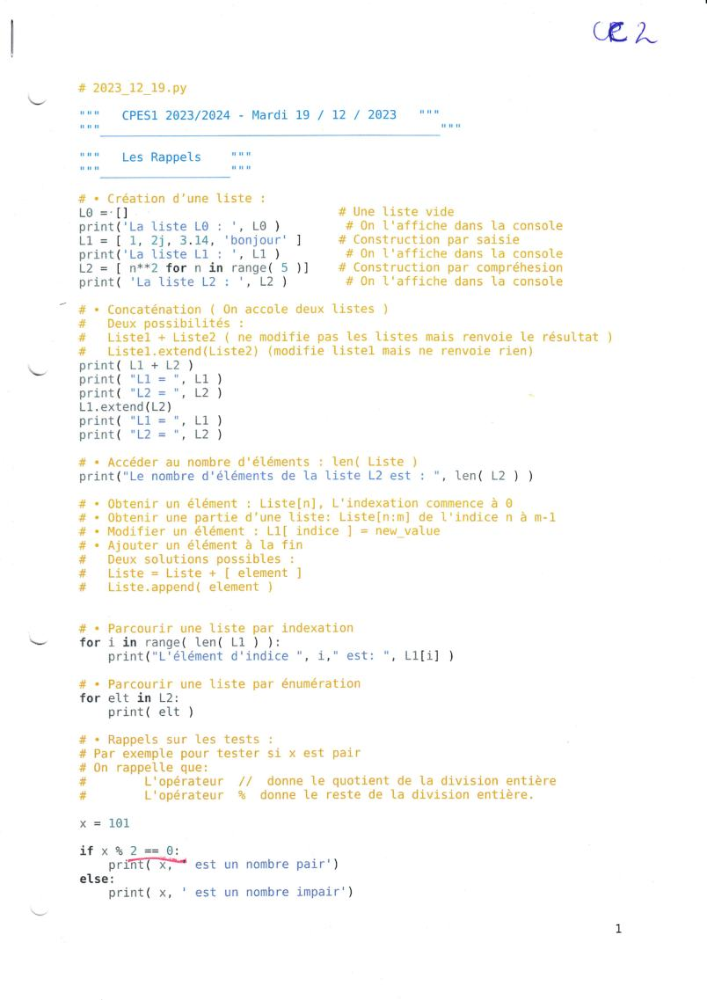
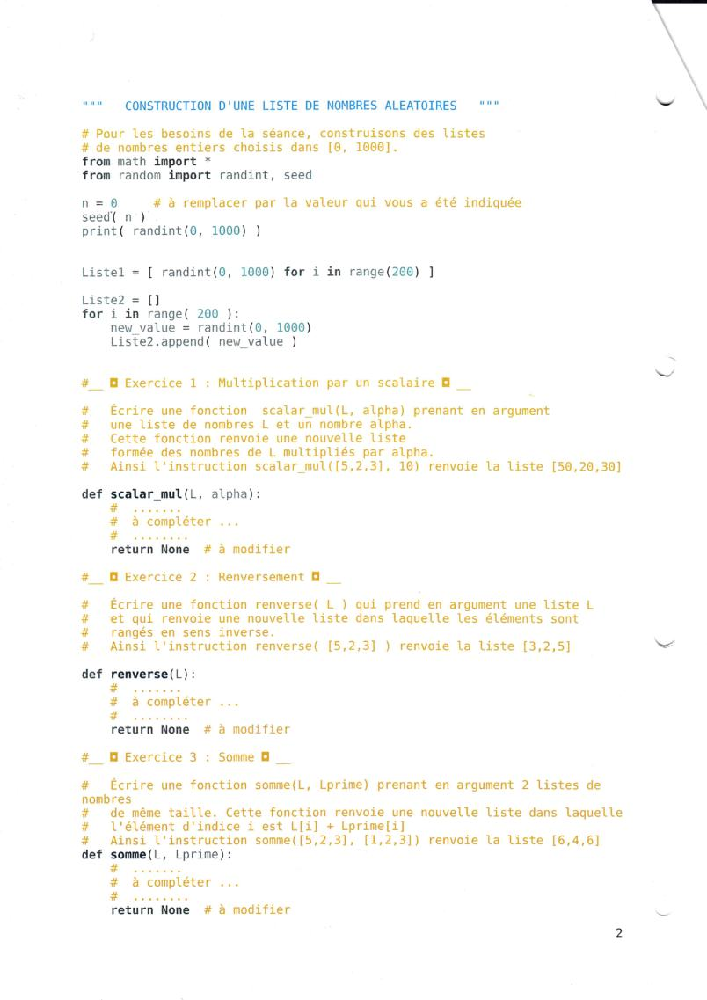
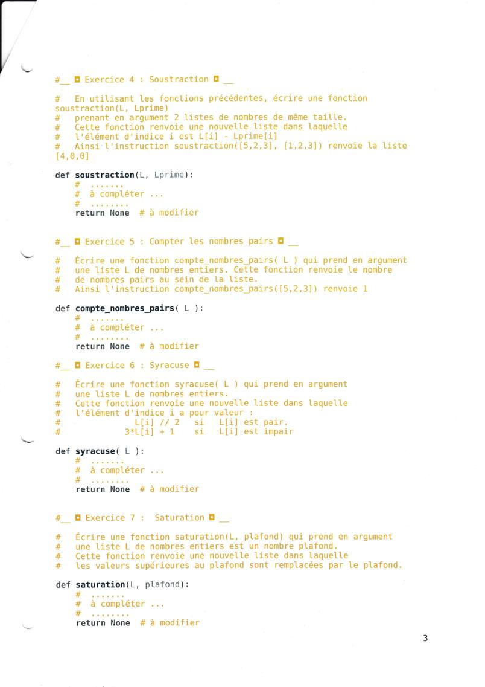
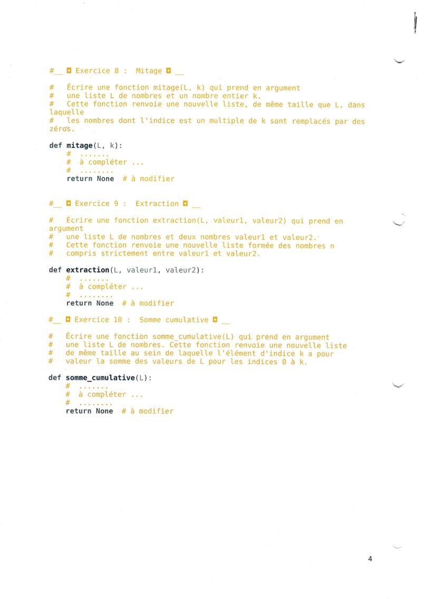

Python pas à pas
Un cours pour celles et ceux qui n'ont jamais programmé. On part de zéro, on avance par petites étapes, et on arrive à réussir les 10 exercices du contrôle.
Ton parcours
Les bases
Lancer du Python, variables, conditions, listes, boucles, fonctions. 6 chapitres.
La méthode
Reconnaître le type d'exercice et suivre une méthode qui marche à tous les coups. 2 chapitres.
Le contrôle CC2 corrigé
Les 10 exercices du sujet, avec des aides progressives, la correction expliquée et 20 entraînements.
Pour réviser
Quiz final, aide-mémoire sur une page, petit dictionnaire des mots de Python, sujet original.
- Python fonctionne directement dans la page : pas besoin d'installer quoi que ce soit. Il faut une connexion internet au premier lancement (environ 10 secondes).
- Ta progression et ton code sont enregistrés dans ton navigateur, sur cet appareil.
- Si tu as déjà un peu programmé, tu peux aller directement aux exercices du contrôle et revenir aux chapitres si besoin.
Le sujet ne donne pas de corrigé : les corrections proposées ici sont des solutions pédagogiques. En cas de doute, le cours de ton enseignant fait foi.
Écrire et lancer du Python
⏱ 10 min
- ce qu'est un programme ;
- lancer du Python et afficher un résultat avec
print; - lire un message d'erreur sans paniquer.
Un programme, c'est une recette
Un programme est une liste d'instructions. L'ordinateur les exécute une par une, de haut en bas, comme une recette de cuisine. Il ne devine rien : il fait exactement ce qui est écrit, dans l'ordre.
Python est un langage : une façon d'écrire ces instructions pour que l'ordinateur les comprenne.
Ton premier programme
L'instruction print(...) affiche ce qu'on lui donne entre parenthèses. Clique sur ▶ Exécuter :
Remarque la différence entre les deux dernières lignes :
print(2 + 3): Python calcule 2 + 3 et affiche5.print("2 + 3"): entre guillemets, c'est du texte. Python l'affiche tel quel, sans calculer.
Modifie le programme ci-dessus pour qu'il affiche ton prénom, puis relance-le. Tu ne peux rien casser : le bouton ↺ Recommencer remet le code de départ.
Qu'affiche print("10 * 2") ?
print(10 * 2) afficherait 20.Où écrire du Python en dehors de ce site ?
| Outil | Pour qui ? |
|---|---|
| Ce site | Pour t'entraîner sur les exercices du cours, sans rien installer. |
| Basthon | Python dans le navigateur, sur ordinateur ou téléphone. Rien à installer. |
| Thonny | Logiciel gratuit et très simple, à installer sur ton ordinateur. Idéal pour débuter. |
Dans Thonny ou Basthon, il y a deux zones : l'éditeur (où on écrit le programme, puis on le lance avec le bouton ▶) et la console (où s'affichent les résultats de print).
Lire un message d'erreur
Tout le monde fait des erreurs, même les experts. Python t'aide en t'envoyant un message. Lance ce programme, qui contient une erreur volontaire :
Un message d'erreur se lit à partir de la fin. Il contient trois informations :
- Le numéro de ligne : où Python s'est arrêté (ici, la ligne 2). L'erreur est sur cette ligne, ou parfois juste au-dessus.
- Le type d'erreur : le mot qui finit par
Error(iciSyntaxError, « erreur d'écriture »). - Le détail : ici, un texte qui n'est pas terminé, car il manque le guillemet fermant.
Corrige l'erreur (ajoute le guillemet après Bonjour) et relance.
| Type d'erreur | Ce que ça veut dire, en général |
|---|---|
SyntaxError | Python ne peut pas lire la ligne : : oublié, parenthèse ou guillemet pas fermé. |
IndentationError | Les lignes ne sont pas bien décalées (on verra ça au chapitre 2). |
NameError | Un nom inconnu : faute de frappe, ou variable pas encore créée. |
IndexError | On demande une case de liste qui n'existe pas (chapitre 3). |
TypeError | On mélange des choses incompatibles, par exemple un nombre et du texte. |
- Python exécute les lignes dans l'ordre, de haut en bas.
print(...)affiche une valeur. Entre guillemets, c'est du texte.- Un message d'erreur se lit par la fin : type d'erreur + numéro de ligne.
Variables et calculs
⏱ 15 min Sert dans les exercices 1 à 10
- ranger une valeur dans une variable et la modifier ;
- faire des calculs, en particulier
//et%; - ne plus confondre
=et==.
Une variable, c'est une boîte avec un nom
Une variable permet de garder une valeur en mémoire pour s'en resservir. Imagine une boîte avec une étiquette :
age = 18
Cette ligne se lit « age reçoit 18 » : on range 18 dans la boîte appelée age. Le signe = ne veut pas dire « est égal » comme en maths : il veut dire « ranger dans ».
Python calcule d'abord tout ce qui est à droite du =, puis range le résultat dans la variable à gauche.
Regarde Python exécuter ce programme ligne par ligne. Clique sur ▶ et observe la colonne « Variables » :
Modifier une variable à partir d'elle-même
En maths, compteur = compteur + 1 serait faux. En Python, c'est l'une des lignes les plus utiles : avec la règle d'or, on calcule compteur + 1 avec l'ancienne valeur, puis on range le résultat dans compteur.
On peut l'écrire en plus court : compteur += 1 fait exactement la même chose.
a = 3 b = a a = 10 print(b)
Les types de valeurs
Python distingue plusieurs sortes de valeurs. C'est important, car on ne peut pas faire les mêmes opérations avec toutes.
| Type | Exemples | C'est quoi ? |
|---|---|---|
int | 18, -3, 0 | un nombre entier |
float | 4.5, 0.25 | un nombre à virgule (on écrit un point, pas une virgule) |
str | "Alice", "12" | du texte, entre guillemets |
bool | True, False | vrai ou faux (chapitre 2) |
list | [5, 2, 3] | une liste de valeurs (chapitre 3) |
Exemple : 2 + 3 vaut 5, mais "2" + "3" vaut "23" (deux textes collés).
Les calculs
| Écriture | Signification | Exemple |
|---|---|---|
+ - * | addition, soustraction, multiplication | 3 * 4 vaut 12 |
/ | division « normale » (résultat à virgule) | 7 / 2 vaut 3.5 |
// | quotient de la division entière | 7 // 2 vaut 3 |
% | reste de la division entière | 7 % 2 vaut 1 |
** | puissance | 2 ** 3 vaut 8 |
Bien comprendre // et %
Tu partages 17 bonbons entre 5 enfants. Chaque enfant en reçoit 3, et il en reste 2.
17 // 5vaut3: combien chacun en reçoit (le quotient).17 % 5vaut2: combien il en reste (le reste).
Cas très utile : x % 2 est le reste de la division par 2. Il vaut 0 si x est pair et 1 s'il est impair. On s'en sert dans les exercices 5, 6 et 8.
Combien vaut 14 % 3 ?
14 // 3) et le reste est 2.Un nombre x est pair quand…
8 % 2 vaut 0 et 7 % 2 vaut 1.= ou == ?
x = 3
Range 3 dans x. C'est une action.
x == 3
Pose la question « x vaut-il 3 ? ». La réponse est True ou False.
Essaie avec d'autres nombres. print peut afficher plusieurs choses séparées par des virgules.
=range une valeur : on calcule à droite, puis on range à gauche.compteur = compteur + 1augmente une variable de 1.//donne le quotient,%donne le reste.x % 2 == 0teste sixest pair.==compare et répondTrueouFalse.
Les conditions : if, else, elif
⏱ 15 min Sert dans les exercices 5 à 9
- faire exécuter du code seulement si une condition est vraie ;
- bien décaler (indenter) les lignes ;
- traduire « strictement », « supérieur », « au moins » en Python.
Une condition est une question vrai / faux
Une condition est une question dont la réponse est True (vrai) ou False (faux).
| En Python | En français | Exemple vrai |
|---|---|---|
a == b | a est égal à b | 4 == 4 |
a != b | a est différent de b | 4 != 5 |
a < b | a est strictement plus petit que b | 3 < 5 |
a > b | a est strictement plus grand que b | 8 > 5 |
a <= b | a est plus petit ou égal à b | 5 <= 5 |
a >= b | a est plus grand ou égal à b | 5 >= 5 |
if : faire quelque chose seulement si…
note = 14
if note >= 10:
print("Validé")
print("Fin")
Trois choses à remarquer :
- La ligne du
ifse termine par deux-points:. - La ligne suivante est décalée de 4 espaces. Ce décalage s'appelle l'indentation. Il indique : « cette ligne fait partie du
if». print("Fin")n'est pas décalé : il est exécuté dans tous les cas.
En Python, le décalage n'est pas décoratif : il change le sens du programme. Toutes les lignes d'un même bloc doivent être décalées exactement pareil (4 espaces).
if / else : choisir entre deux chemins
else veut dire « sinon ». Un seul des deux blocs est exécuté. Regarde Python décider si 7 est pair :
elif : plus de deux cas
elif veut dire « sinon, si ». Python teste les conditions dans l'ordre et exécute seulement le premier bloc dont la condition est vraie.
if note < 10:
avis = "à revoir"
elif note < 15:
avis = "bien"
else:
avis = "très bien"
Avec note = 12 : le premier test est faux, le deuxième est vrai, donc avis vaut "bien", et on ne regarde pas le else.
Traduire l'énoncé en conditions
Les énoncés de contrôle utilisent des mots précis. Chaque mot compte !
| Dans l'énoncé | En Python | Exercice |
|---|---|---|
| « x est pair » | x % 2 == 0 | 5, 6 |
| « x est impair » | x % 2 == 1 ou x % 2 != 0 | 6 |
| « supérieur au plafond » | x > plafond | 7 |
| « i est un multiple de k » | i % k == 0 | 8 |
| « strictement entre a et b » | a < x < b | 9 |
| « entre a et b, bornes comprises » | a <= x <= b |
Pour combiner deux conditions : and (« et » : les deux doivent être vraies) et or (« ou » : au moins une doit être vraie). a < x < b est une écriture courte pour a < x and x < b.
On veut garder les nombres strictement compris entre 2 et 7. Quelle condition est juste ?
<. Avec or, presque tous les nombres passeraient (par exemple 100 > 2).x = 15
if x < 10:
print("A")
elif x < 15:
print("C")
else:
print("B")- Oublier le
:à la fin de la ligne duifou duelse→SyntaxError. - Écrire
if x % 2 = 0:avec un seul=→SyntaxError. Pour comparer, c'est==.
if condition:puis un bloc décalé de 4 espaces.else:= sinon ;elif condition:= sinon si.- « strictement » →
<ou>; « ou égal », « au moins », « au plus » →<=ou>=.
Les listes
⏱ 20 min Sert dans les exercices 1 à 10
- lire un élément grâce à son indice (et pourquoi on commence à 0) ;
- construire une nouvelle liste avec
[]etappend; - éviter l'erreur
IndexError.
Une rangée de cases numérotées
Une liste range plusieurs valeurs dans un ordre précis, entre crochets :
L = [5, 2, 3]
Imagine une rangée de cases. Chaque case a un numéro, appelé indice. Attention : la première case porte le numéro 0.
L = [5, 2, 3]Pourquoi 0 ? L'indice indique de combien de cases on se décale depuis le début : la première case est à 0 case du début. Il faut juste s'y habituer.
Lire dans une liste
| Écriture | Résultat pour L = [5, 2, 3] | Explication |
|---|---|---|
L[0] | 5 | la case d'indice 0 (la première) |
L[2] | 3 | la case d'indice 2 (la troisième) |
len(L) | 3 | le nombre d'éléments (length = longueur) |
L[len(L) - 1] | 3 | le dernier élément : son indice est len(L) - 1 |
L[-1] | 3 | raccourci pour le dernier élément |
L[3] | ❌ IndexError | il n'y a pas de case 3 ! |
Une liste de n éléments a des indices de 0 à n − 1. Le dernier indice est toujours len(L) - 1.
Avec notes = [12, 8, 15, 10], combien vaut notes[2] ?
Avec notes = [12, 8, 15, 10], quel est l'indice du dernier élément ?
Modifier et ajouter
L[1] = 20remplace le contenu de la case 1.Ldevient[5, 20, 3].L.append(7)ajoute une case à la fin.Ldevient[5, 20, 3, 7].
La technique clé du contrôle : partir d'une liste vide
Presque tous les exercices demandent de renvoyer une nouvelle liste. La méthode est toujours la même : on crée une liste vide [], puis on la remplit élément par élément avec append.
R = R.append(5)est faux.appendmodifie la liste mais ne renvoie rien (None). Après cette ligne,RvautNone! Écris simplementR.append(5).B = Ane copie pas la liste. Ça colle une deuxième étiquette sur la même liste : modifierBmodifie aussiA. C'est pourquoi, pour une « nouvelle liste », on part de[].
Pour info : autres opérations du sujet
La page 1 du sujet rappelle aussi ces écritures. Elles ne sont pas nécessaires pour les exercices, mais il faut les reconnaître.
| Écriture | Effet | Exemple |
|---|---|---|
A + B | crée une nouvelle liste : A puis B collées | [1, 2] + [3] donne [1, 2, 3] |
A.extend(B) | ajoute les éléments de B à la fin de A (A est modifiée) | |
L[n:m] | la tranche des indices n à m − 1 | [5, 2, 3][0:2] donne [5, 2] |
[n**2 for n in range(5)] | liste construite « par compréhension » | donne [0, 1, 4, 9, 16] |
Attention : avec des listes, + colle et * répète : [5, 2] * 3 donne [5, 2, 5, 2, 5, 2]. Pour additionner ou multiplier les nombres contenus dans une liste, il faut une boucle (chapitre suivant).
- Les indices commencent à 0 et finissent à
len(L) - 1. L[i]lit la casei;len(L)donne le nombre d'éléments.- Nouvelle liste :
R = []puisR.append(...).
Les boucles for
⏱ 25 min Sert dans les exercices 1 à 10
- répéter des instructions pour chaque élément d'une liste ;
- utiliser
rangeet parcourir les indices ; - parcourir une liste à l'envers ;
- calculer un total avec une boucle.
Pourquoi des boucles ?
Pour multiplier par 10 chaque nombre d'une liste de 200 nombres, on ne va pas écrire 200 lignes. Une boucle répète les mêmes instructions automatiquement, pour chaque élément.
Façon 1 : parcourir les valeurs
for x in L:
instructions
Se lit : « pour chaque élément x de la liste L, fais les instructions ». La variable x prend la première valeur, puis la deuxième, et ainsi de suite. Le nom x est libre (on aurait pu écrire nombre ou note).
Comme pour le if : : à la fin, et les lignes répétées sont décalées.
range : une suite de nombres
range fabrique une suite de nombres entiers. Il sert à répéter un nombre de fois précis, ou à parcourir des indices.
| Écriture | Nombres produits | Lecture |
|---|---|---|
range(4) | 0, 1, 2, 3 | de 0 jusqu'à 4, 4 exclu |
range(2, 6) | 2, 3, 4, 5 | de 2 jusqu'à 6, 6 exclu |
range(0, 10, 3) | 0, 3, 6, 9 | de 0 à 10 exclu, de 3 en 3 |
range(5, 0, -1) | 5, 4, 3, 2, 1 | de 5 à 0 exclu, en descendant |
Le nombre de fin n'est jamais inclus. C'est pratique : range(len(L)) donne exactement les indices de L, de 0 à len(L) - 1.
list(range(2, 5))
Façon 2 : parcourir les indices
for i in range(len(L)):
... L[i] ...
Ici, i prend les numéros de case 0, 1, 2… et on lit la valeur avec L[i].
Laquelle choisir ?
| Si l'énoncé… | Utilise | Exercices |
|---|---|---|
| parle seulement des valeurs (multiplier, compter les pairs, filtrer…) | for x in L: | 1, 5, 6, 7, 9, 10 |
| parle de position ou d'indice | for i in range(len(L)): | 8 |
utilise deux listes en même temps (L[i] et Lprime[i]) | for i in range(len(L)): | 3 |
| demande de lire la liste à l'envers | for i in range(len(L) - 1, -1, -1): | 2 |
Parcourir une liste à l'envers
Pour lire L = [5, 2, 3] à l'envers, il faut les indices 2, 1, 0. On utilise range(début, fin, pas) :
- début = le dernier indice,
len(L) - 1(ici 2) ; - pas =
-1pour descendre ; - fin =
-1, car la fin est exclue : on s'arrête juste avant -1, donc on atteint 0.
Calculer un total : l'accumulateur
Pour additionner tous les nombres d'une liste, on utilise une variable qui « se souvient » de la somme déjà calculée. On l'appelle un accumulateur.
total = 0Il faut créer le total avant la boucle. S'il est dans la boucle, il est remis à zéro à chaque tour et on perd tout.
Le programme doit afficher [8, 2, 12] : le double de chaque nombre.
Résultat attendu : Moyenne : 11.25.
for x in L:→xprend chaque valeur de la liste.for i in range(len(L)):→iprend chaque indice ; la valeur estL[i].range(a, b)s'arrête avantb. À l'envers :range(len(L) - 1, -1, -1).- Un total se crée avant la boucle et augmente dans la boucle.
Les fonctions
⏱ 20 min Sert dans les exercices 1 à 10
- écrire une fonction avec
defetreturn; - faire la différence entre
returnetprint; - bien placer le
returnaprès une boucle ; - utiliser une fonction dans une autre.
Une fonction, c'est une machine
Une fonction est une machine à laquelle on donne un nom. On lui donne des entrées, elle fait un calcul, et elle renvoie un résultat. Chaque exercice du contrôle te demande d'écrire une fonction.
def carre(x):
resultat = x * x
return resultat
def(pour define) commence la définition, suivi du nom de la fonction.- Entre parenthèses,
xest un paramètre : le nom donné à l'entrée. - Le contenu de la fonction est décalé, comme pour
ifetfor. returnrenvoie le résultat à celui qui a utilisé la fonction.
Définir, puis appeler
Écrire def ne lance pas la fonction : ça la mémorise. Pour l'utiliser, on l'appelle par son nom avec des valeurs entre parenthèses : carre(5). Ces valeurs s'appellent les arguments.
Remarque : la colonne « Variables » change quand on entre dans la fonction. Les variables d'une fonction (x, resultat) n'existent que pendant son exécution.
return n'est pas print
def double(x):
return 2 * x
y = double(4) + 1
print(y) # 9Le résultat revient au programme : on peut le ranger, le réutiliser, faire des calculs avec.
def double(x):
print(2 * x)
y = double(4) + 1
# TypeError !Le 8 est affiché à l'écran, mais la fonction ne renvoie rien (None). Impossible de calculer avec.
Quand l'énoncé dit « cette fonction renvoie », il faut un return. Le sujet donne des squelettes qui finissent par return None # à modifier : c'est une ligne à remplacer, pas à garder.
Où placer le return ?
return fait deux choses : il renvoie la valeur et il arrête immédiatement la fonction. S'il est dans la boucle, la boucle s'arrête dès le premier tour. Regarde ce qui se passe :
for x in L:
R.append(2 * x)
return R for x in L:
R.append(2 * x)
return RLa seule différence est le décalage : à droite, return est aligné avec for, donc il s'exécute après la boucle.
Que renvoie f(3) ?
def f(x):
y = x + 1
return y * 2
print("fini")print n'est jamais exécutée : return a déjà arrêté la fonction.Une fonction peut en appeler une autre
Une fois qu'une fonction est écrite, on peut s'en servir dans une autre fonction, comme len ou print. C'est exactement ce que demande l'exercice 4.
def double(x):
return 2 * x
def quadruple(x):
return double(double(x))
print(quadruple(5)) # 20
double(double(5)) : Python calcule d'abord double(5) = 10, puis double(10) = 20.
Une fonction qui reçoit une liste
Voici la forme de presque tous les exercices du contrôle : une fonction reçoit une liste et renvoie une nouvelle liste.
La fonction plus_un(L) doit renvoyer une nouvelle liste où chaque nombre est augmenté de 1. Les décalages sont déjà faits.
Tester sa fonction
Une fonction écrite n'est pas une fonction juste ! Teste-la toujours avec print(...) sur l'exemple de l'énoncé, puis sur des cas particuliers (liste vide, nombre négatif…).
print(cube(2)) print(cube(0)) print(cube(-3))
def nom(paramètres):puis un bloc décalé. Rien ne se passe tant qu'on n'appelle pasnom(...).returnrenvoie le résultat et arrête la fonction.printne fait qu'afficher.- Après une boucle, le
returnest aligné avecfor. - Une fonction peut appeler une autre fonction déjà écrite.
Les 4 recettes à reconnaître
⏱ 20 min
- reconnaître, en lisant un énoncé, le type d'exercice ;
- écrire de mémoire le squelette qui correspond.
Bonne nouvelle : les 10 exercices du contrôle n'utilisent que quelques recettes. Le plus dur n'est pas d'inventer un programme, c'est de reconnaître la recette dans l'énoncé. Pour chaque recette : les mots qui doivent te mettre sur la piste, un schéma, et le squelette à adapter.
① Transformer
« renvoie une nouvelle liste… chaque élément… remplacé par… »
Un résultat pour chaque élément. Même longueur.
R = []
for x in L:
R.append(calcul(x))
return RExercices 1, 2, 6, 7, 8
② Filtrer
« formée des nombres qui… », « garder seulement… »
On garde certains éléments. Liste plus courte (ou égale).
R = []
for x in L:
if condition(x):
R.append(x)
return RExercice 9 · pas de else !
③ Compter
« renvoie le nombre de… », « combien… »
Le résultat est un seul nombre, pas une liste.
n = 0
for x in L:
if condition(x):
n = n + 1
return nExercice 5
④ Accumuler
« la somme des valeurs de 0 à k », « jusqu'ici »
Une variable se souvient des tours précédents.
R = []
total = 0
for x in L:
total = total + x
R.append(total)
return RExercice 10
Deux variantes à connaître
Combiner deux listes par leurs indices
Quand l'énoncé parle de L[i] et Lprime[i] : on parcourt les indices pour lire les deux listes « en face » l'une de l'autre.
R = []
for i in range(len(L)):
R.append(L[i] + Lprime[i])
return R
Exercice 3
Réutiliser des fonctions
Quand l'énoncé dit « en utilisant les fonctions précédentes » : pas de boucle, on appelle les fonctions déjà écrites. Exercice 4
Entraîne-toi à reconnaître
« Écrire une fonction qui renvoie le nombre de notes supérieures à 10. »
« Écrire une fonction qui renvoie la liste des prix inférieurs à 20 €. »
if sans else.« Écrire une fonction qui renvoie une nouvelle liste où chaque prix est augmenté de 10 %. »
« Une liste donne les dépenses de chaque jour. Renvoyer la liste des dépenses totales depuis le début du mois, jour après jour. »
Les 10 exercices du contrôle, classés
| Ex. | Fonction | Recette | Parcours |
|---|---|---|---|
| 1 | scalar_mul | Transformer | valeurs |
| 2 | renverse | Transformer (ordre inversé) | indices à l'envers |
| 3 | somme | Combiner deux listes | indices |
| 4 | soustraction | Réutiliser des fonctions | aucun |
| 5 | compte_nombres_pairs | Compter | valeurs |
| 6 | syracuse | Transformer + if/else | valeurs |
| 7 | saturation | Transformer + if/else | valeurs |
| 8 | mitage | Transformer selon la position | indices |
| 9 | extraction | Filtrer | valeurs |
| 10 | somme_cumulative | Accumuler | valeurs |
Avant de coder, pose-toi deux questions : le résultat est-il une liste ou un nombre ? et a-t-il la même longueur que l'entrée ? Les réponses te donnent presque toujours la recette.
La méthode pour réussir un exercice
⏱ 15 min
- suivre 4 étapes pour n'importe quel exercice ;
- vérifier ton code avec des tests bien choisis ;
- repérer les erreurs les plus fréquentes.
Les 4 étapes
- Comprendre. Reformule avec tes mots : « ma fonction reçoit … et doit renvoyer … ». Le résultat est-il une liste ou un nombre ? Quelle recette ?
- Faire à la main. Sur l'exemple de l'énoncé, écris sur papier ce qui se passe à chaque tour de boucle (voir le tableau ci-dessous).
- Coder. Écris le squelette de la recette, puis adapte le calcul ou la condition.
- Tester. L'exemple de l'énoncé, puis les cas particuliers.
Étape 2 : le tableau « à la main »
C'est la meilleure façon de comprendre (et de trouver ses erreurs). Une ligne par tour de boucle, une colonne par variable. Exemple pour saturation([7, 15, 10], 10) :
| Tour | x | x > 10 ? | On ajoute | resultat après |
|---|---|---|---|---|
| 1 | 7 | Faux | 7 | [7] |
| 2 | 15 | Vrai | 10 | [7, 10] |
| 3 | 10 | Faux | 10 | [7, 10, 10] |
Étape 4 : quels tests choisir ?
| Test | Pourquoi | Exemple |
|---|---|---|
| L'exemple de l'énoncé | Vérifier la demande principale | scalar_mul([5, 2, 3], 10) |
Une liste vide [] | Le programme ne doit pas planter | renverse([]) → [] |
| Une valeur égale à une borne | Vérifier < ou <= | saturation([10], 10) → [10] |
| Zéro, des négatifs | Vérifier la parité, les signes | compte_nombres_pairs([0, -2]) → 2 |
| Un seul élément | Vérifier les range | renverse([9]) → [9] |
Les erreurs les plus fréquentes
| Ce qu'on observe | Cause probable | Solution |
|---|---|---|
La fonction renvoie None | return None pas remplacé, ou return oublié | Termine par return resultat |
| Seul le premier élément est traité | return placé dans la boucle | Aligne return avec for |
| Le total est faux | total = 0 placé dans la boucle | Crée-le avant le for |
SyntaxError | : oublié, ou = au lieu de == | Relis la ligne indiquée |
IndexError | Indice trop grand, range mal réglé | Les indices vont de 0 à len(L) - 1 |
AttributeError: 'NoneType'… | R = R.append(x) | Écris seulement R.append(x) |
| Un élément de trop ou en moins | Mauvaise borne : < au lieu de <=, ou fin de range | Teste une valeur égale à la borne |
Fabriquer de grandes listes pour tester
La page 2 du sujet propose de créer des listes de nombres au hasard pour tester les fonctions sur beaucoup de données :
randint(0, 1000)tire un entier entre 0 et 1000, les deux inclus (contrairement àrange).seed(n)fixe le point de départ du hasard : avec le mêmen, on obtient les mêmes nombres. Pratique pour comparer ses résultats. Le sujet demandait de remplacern = 0par une valeur donnée à chaque étudiant.- Dans la boucle,
ine sert qu'à compter les 200 répétitions.
- Chaque fonction se termine par un
return(et plus aucunreturn None). - Le
returnest après la boucle, aligné avecfor. - « Nouvelle liste » : tu as créé
resultat = []et tu n'as pas modifiéL. - Tu as testé l'exemple de l'énoncé, une liste vide et une valeur limite.
Quiz final
12 questions sur tout le cours. Ton score compte les bonnes réponses du premier coup.
Score : 0 / 12
Pour L = [8, 3, 5], combien vaut L[0] ?
L[0] est le premier élément, 8.Pour L = [8, 3, 5], que provoque L[3] ?
Combien vaut 17 % 5 ?
17 // 5 vaut 3).Quels nombres produit range(1, 4) ?
Pour parcourir [5, 2, 3] à l'envers, quel range donne les indices ?
Que fait return ?
print qui affiche. return renvoie la valeur au programme et termine la fonction tout de suite.Une fonction qui construit une liste renvoie seulement le premier élément. Cause la plus probable ?
return arrête la fonction : placé dans la boucle, il s'exécute dès le premier tour.Après R = [] puis R = R.append(4), que vaut R ?
append modifie la liste mais renvoie None, et c'est ce None qu'on range dans R. Il faut écrire seulement R.append(4).« Renvoyer la liste des nombres compris strictement entre 0 et 10. » Quelle recette ?
if sans else.Quelle condition teste qu'un indice i est un multiple de k ?
i, pas la valeur L[i]. Un multiple de k a un reste nul quand on le divise par k.Dans une somme cumulative, où place-t-on total = 0 ?
L'exercice 4 demande d'utiliser les fonctions précédentes. Quelle ligne calcule L − Lprime ?
L - Lprime provoque une erreur avec des listes, et la deuxième réponse calcule −(L + Lprime).Aide-mémoire
Tout l'essentiel sur une page, à relire la veille du contrôle.
Variables et calculs
x = 5 # x reçoit 5 x = x + 1 # x augmente de 1 7 // 2 # 3 (quotient) 7 % 2 # 1 (reste) x % 2 == 0 # x est pair ?
Conditions
if x > 10:
...
elif x > 5:
...
else:
...
a < x < b # strictement entreListes
L = [5, 2, 3] L[0] # 5 (le premier) len(L) # 3 L[len(L) - 1] # 3 (le dernier) R = [] R.append(7) # ajoute à la fin
Boucles
for x in L: # valeurs for i in range(len(L)): # indices for i in range(len(L) - 1, -1, -1): # à l'envers range(4) # 0, 1, 2, 3
Fonction « nouvelle liste »
def f(L):
resultat = []
for x in L:
resultat.append(...)
return resultatFonction « compter »
def f(L):
n = 0
for x in L:
if ...:
n = n + 1
return n- Indices de 0 à
len(L) - 1. range(a, b)s'arrête avantb.returnaprès la boucle, aligné avecfor.total = 0avant la boucle.R.append(x)et pasR = R.append(x).
Petit dictionnaire de Python
- Accumulateur
- Variable qui garde un résultat d'un tour de boucle à l'autre (un total, un compteur). Elle est créée avant la boucle.
- Affectation
- L'action de ranger une valeur dans une variable avec
=. - Appeler une fonction
- L'utiliser en écrivant son nom suivi de parenthèses :
carre(5). - Argument
- La valeur donnée à une fonction quand on l'appelle. Dans
carre(5), l'argument est 5. - Bloc
- Groupe de lignes décalées du même nombre d'espaces, après une ligne qui finit par
:. - Booléen
- Valeur vraie ou fausse :
TrueouFalse. - Boucle
- Instruction qui répète un bloc.
for x in L:le répète pour chaque élément de L. - Condition
- Question dont la réponse est
TrueouFalse, commex > 10. - Élément
- Une des valeurs rangées dans une liste.
- Fonction
- Morceau de programme qui porte un nom, reçoit des paramètres et peut renvoyer un résultat.
- Indentation
- Le décalage (4 espaces) au début d'une ligne. En Python, il indique à quel bloc appartient la ligne.
- Indice
- Le numéro d'une case de liste. Il commence à 0.
- Liste
- Suite ordonnée de valeurs entre crochets :
[5, 2, 3]. None- Valeur spéciale qui veut dire « rien ». Une fonction sans
returnrenvoieNone. - Paramètre
- Le nom donné à une entrée dans la définition d'une fonction. Dans
def carre(x):, le paramètre estx. - Renvoyer
- Ce que fait
return: donner le résultat de la fonction au programme qui l'a appelée. - Variable
- Nom qui désigne une valeur gardée en mémoire.
Le sujet original
Le contrôle CPES1 du mardi 19 décembre 2023, en 4 pages. La page 1 contient les rappels, la page 2 la création de listes au hasard, puis les 10 exercices à compléter.



